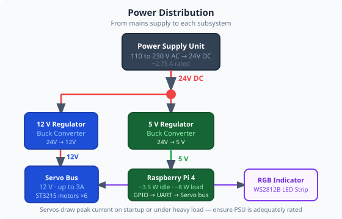
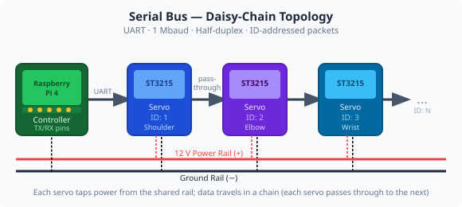
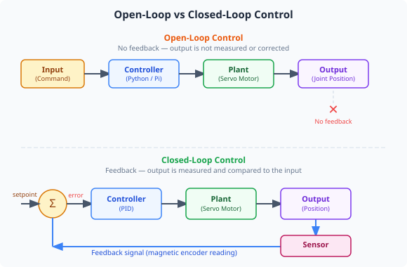

Duration: 3–4 hours · Prerequisites: Module 1 (Safety)

Every electronic system needs a carefully designed power supply. The robot arm uses two separate voltage levels, each with a specific purpose.
Servos draw large, spiky currents when they start moving. If the servo supply and the Raspberry Pi supply were shared directly, those current spikes would cause voltage drops that could crash the Pi or corrupt data. Separate supply rails with decoupling capacitors keep the logic supply stable.
The Raspberry Pi is a single-board computer that acts as the central controller (the "brain") of the robot arm. It runs a Linux operating system and a server program that:
A WebSocket is a two-way, persistent network connection. Unlike a web page that sends a request and waits for a single response, a WebSocket stays open so the application and the Pi can exchange messages continuously — ideal for real-time control where you need instant feedback on joint angles.
The ST3215 servos communicate over a half-duplex serial bus — a single wire that is shared by all servos. The Pi sends a packet addressed to a specific servo ID; that servo responds while all others stay silent. Because it is half-duplex, transmission and reception cannot happen simultaneously.
In this activity you will establish a live connection between the control application and the Raspberry Pi running on the robot arm.
Ask your instructor for the IP address of the Raspberry Pi on your lab network. It will look something like 192.168.1.xx.
Open the Robot Arm Control Application and navigate to the Connection tab.
In the Connection tab, either type the Raspberry Pi's IP address and port (8080) manually, or press Auto-Detect to scan the local network for the Pi automatically. The status indicator should change to show a connected state.
Click Connect. Watch the status indicator — it should change from red/grey to green within a few seconds.
Press Take Control. This grants you a control session — the server will now accept movement commands from your computer. The status bar should confirm you have control. Note: if someone else already has control, you will see a message indicating this.
If connection fails, check: Is the Pi powered on? Are you on the same network? Is the firewall blocking port 8080? Record what you tried in the worksheet.
Once connected, note the latency value displayed (milliseconds). This is the round-trip time for a message from your PC to the Pi and back.

The joints are driven by ST3215 bus servos — smart actuators that are more capable than a standard hobby RC servo. Each one contains:
The servo motors have an magnetic rotary encoder mounted internally. This provides an angle reading that the Raspberry Pi can use to verify the servo's position.
With the arm connected, explore the live data being returned by each servo. Ensure you are connected from Activity 3A before starting.
In the Joint Control tab, observe the six joint status cards. Each card shows live data from its servo: angle (°), velocity, load (%) (percentage of stall torque — a proxy for current draw), voltage (V), and temperature (°C). Record the idle values for all six joints in the worksheet.
Disable torque on one joint and gently move it by hand. Watch the angle reading update in real time — the update rate is approximately 20 ms (50 times per second). Re-enable torque.
Open the Settings tab and find the status watchdog interval. If the server stops sending updates for longer than this threshold, the app falls back to polling. This is what keeps the display responsive even if the network briefly hesitates.
Return to Joint Control. Using the step controls, move Joint 1 by +10°. Watch the load reading change as the motor works against gravity. Record the peak load value.

One of the most important concepts in control engineering is whether a system uses feedback.
In an open-loop system, a command is sent and the system has no way to check whether the result was achieved. Think of a simple light timer: it turns on at 6pm regardless of whether it is already daylight.
A closed-loop system measures its own output and adjusts accordingly. The ST3215 servos use this internally: the target angle is the setpoint, the encoder reading is the measurement, and the motor drive is continuously adjusted by a PID controller to eliminate the error between them.
| Joint | Current Angle (°) | Temperature (°C) | Supply Voltage (V) |
|---|---|---|---|
Every modern machine — from a car's engine management system to a hospital ventilator — relies on closed-loop feedback. Understanding how sensors, controllers, and actuators work together is the foundation of all control engineering.
In the robot arm you just connected to, there are multiple closed loops running simultaneously: each servo is maintaining its position against gravity and external forces while the Raspberry Pi is listening for new commands at the same time. The network connection you set up is the link that lets you, as the operator, become part of an outer control loop — giving a setpoint to the system and observing its response.
The temperature and voltage readings you recorded are not just numbers — they are diagnostic data. In an industrial setting, engineers use this data to predict when a servo is about to fail before it causes a production stoppage. This kind of condition monitoring is a major part of modern maintenance engineering.
1. Why is the servo motor supply (12 V) kept separate from the Raspberry Pi supply (5 V)?
2. Two servos on the bus are accidentally given the same ID. What is most likely to happen when a command is sent to that ID?
3. A servo is holding a joint at 45°. Someone pushes the arm and it moves to 48°. In a closed-loop system, what happens next?